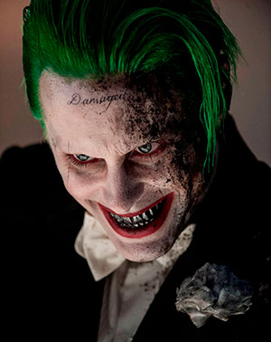
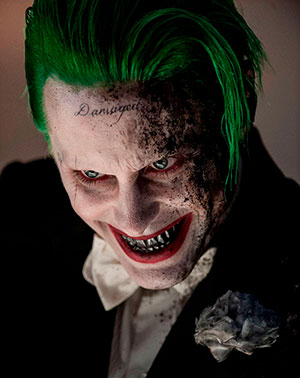

El psicópata: Jared Leto
Aunque con poco tiempo en pantalla, el “Joker” de Leto en “Suicide Squad” (2016) es una encarnación bien lograda, derrochando locura y un aspecto siniestro. Quizás la sensación general es que pudo dar más.
Pasaría tiempo antes de que otro histrión se animara con el “payaso príncipe del crimen”, hasta que llegó Jared Leto, quien ofreció una imagen moderna y apegada a los cómics, pero que se vio opacada por la edición de la cinta “Escuadrón Suicida”. Iba a ser el villano principal y terminó de relleno.